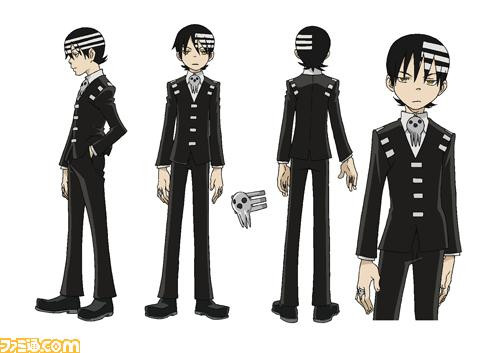

데스 더 키드(Death The Kid)

소울 이터의 주연 중 한명. 성우는 애니메이션에서 미야노 마모루/김민정/토드 하버콘. 파트너는 각각 하나의 권총으로 변하는 엘리자베스 톰슨과 패트리시아 톰슨, 특이하게 파트너가 두 명이다. 이 무기들로 사용하는 오의는 데스 캐논. 거의 날아다닐 수 있는 스케이트 보드 '베르제브브'를 사용해서 다른 캐릭터들보다 이동도 훨씬 수월하다. 가끔은 무기로 쓰기도 하는 듯. 이 스케이트 보드는 사신답게 해골 형상의 힘을 일으켜 자유로히 출현시키거나 없앨 수 있다. 다른 사람에게 와타시를 쓰며 깍듯이 하는데 아버지에게는 오레를 쓰며 반말을 쓴다. 이름의 유래는 빌리 더 키드인듯.총을 거꾸로 잡고 새끼손가락으로 방아쇠를 당겨 쏜다. 머리카락 왼쪽 부분에만 있는 흰 선 세 줄이 특징이다. 이 세 개의 선은 불교의 삼도를 의미한다. 이것 때문에 본인은 시메트리가 안 맞는다는 트라우마가 있는 듯. 사신님의 아들로, 머리도 좋고 얼굴도 잘 생기고 돈도 많고 실력도 뛰어난 장인. 사신이기 때문에 몸에 독이 통하지 않고, 체력, 기타 신체능력도 인간인 다른 장인들과는 격이 다르다. 또한 사신님의 말에 따르면 키드는 사신이기 때문에 직접 무기를 만들 필요도, 학교에 다닐 필요도 없다는 것. 그러나 본인 희망으로 둘 다 하고 있다.